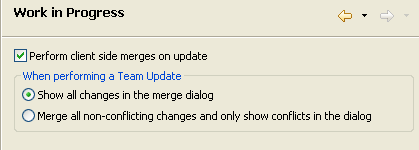
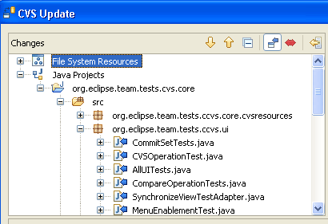
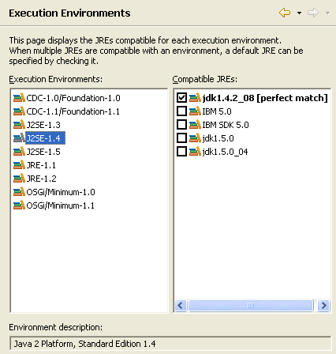
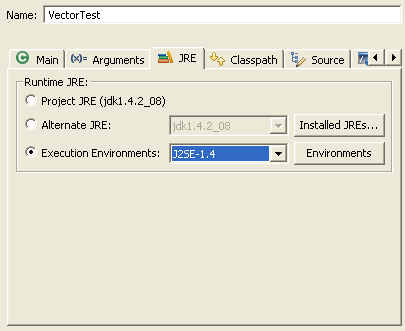

Platform UI
Just in time for Christmas...all the draggable trimmings
The window 'trim' (i.e., Status Line, Heap Status, Fast View Bar...) can now be repositioned around the workbench window. Each trim element has its own grab handle which you can either click and drag to move the trim or right-click to get a context menu.

Problems View filters are tied to the Window Working Set by default when they are created. The user does not have to update the Problems view when they set up their working sets if default settings are used. If there are no working sets, the filter is applied to all elements.

Filtering in Import, Export, and New wizards
The Import, Export, and New wizards now provide filtering of wizards that appear in the list based on text provided by the user. This is the same feature that already exists in the Preferences and Show View dialogs.


JFace field assistance
JFace introduces new support for assisting the user in completing fields inside dialogs and forms. The org.eclipse.jface.fieldassist package provides classes that let you decorate arbitrary controls with images and corresponding hover text. These can be used for purposes such as marking required fields in a dialog, showing field-based error conditions, or showing content-assist prompts. The package also allows you to install content proposals on a control, including a popup dialog with content proposals, secondary popups for further information, and options for invoking proposals explicitly or in an automatic (type-ahead) style. Try it out and get your requests in before the M5 API freeze!

User Assistance
Support for dynamic Help content
You can read more about XHTML content support in the Dynamic Content document.
Search enhancements
You can read more about the enhancements in the UA search enhancements proposal.

SWT
HSB color support
A color can be created by specifying the hue, saturation, and brightness. In addition, for a given color, the hue, saturation, and brightness values can be queried.

For an example, see the SWT snippet
StyledText alignment, indentation, justification
StyledText now supports indenting, justifying and aligning text.

For an example, see the SWT snippet
Embedded objects in StyledText
StyledText now allows you to embed objects such as images or widgets inside the text. Objects wrap with the text.

For an example, see the SWT snippet
Background image
A background image can be set into a control. In addition, the background can be inherited by child widgets such as labels.

For an example, see the SWT snippet
Native image loading
The constructor Image(Device device, String filename) will
now load images using native operating system calls. This has improved
performance of image loading and increased the maximum size of image that
can be loaded.
Dragging text
If the SWT.DragDetect event is hooked on Text or StyledText,
the selection will not be cleared when the user drags from within a selected
range of text. This makes it possible to support dragging from the Text and
StyledText widgets.
For an example, see this SWT snippet
Team/CVS
CVS Update options
In M3, CVS added the capability to perform client side merges on a Team > Update. In M4, this has been enhanced to allow you to configure when the update is shown in a dialog. You may choose to preview the entire merge or only be prompted if there are conflicts to be resolved.

Model content in CVS Update dialog
When the "Perform client side merges on update" work-in-progress preference is enabled and a merge dialog is shown, the dialog will show the effects of the update in terms of the models involved in the operation (for those models that provide the appropriate support).

Generic File History view
A new generic history view has been added. The view is not hooked up to the CVS Show History menu action yet. It can be opened using Window>Show View>Other>Team>File History View and can be populated using drag & drop or Link with Editor. The purpose of this view in M4 is to preview support that is coming in 3.2 with the expectation that this view will replace the CVS History view, and can be used by other team providers as well.

Expand All in CVS Repositories view
An Expand All menu action has been added to folders in the CVS Repositories view. This action will fetch the entire subtree in a single round trip and expand it in the view.
JDT Core
Support for secondary types

Completion on labels

CamelCase support in code completion

Support for Java-like extensions

Resources
Linked resources anywhere

JDT UI
Clean Up wizard
The Code Clean Up wizard has been extended with the following new options:
- Remove unused private field
- Remove unused local variable
- Convert for loops to enhanced for loops
- Convert control statement body to block
- Qualify access to static field with declaring class
- Change indirect access to static member to direct access
Select a project, package, or file and start Source > Clean Up... to start this wizard.
Surround-with template
The existing Surround With Quick Fix is now aware of variables that need to be pulled out or made final. Select the lines to surround (full line selection required!) and press Ctrl+1 to see all templates.

${line_selection}
variable.Content Assist remembers right hand sides
Content assist (Ctrl+Space on most platforms)
remembers the types most recently used in similar situations. For
example, if you always assign ArrayList instances to List
variables, the ArrayList proposal will rank higher than
other type proposals. Also, the remembered types will be shown even if
there is no prefix.

Rename Type
updates similarly named elements

Delete Package is now hierarchical

Refactoring-aware JAR File Import/Export
The current refactoring tools of JDT have been extended to support applying refactorings across different workspaces.
Refactoring information can now be exported using the JAR Export Wizard. This feature can be enabled on the first page of the JAR Export Wizard by checking the option Annotate JAR file with refactoring information.

A corresponding JAR Import Wizard is available as well, guiding the user through the process of updating an existing version of a JAR file with a new one, executing all refactorings performed between the two versions of a JAR library.
This works for the following refactorings:
- Rename Package, Type, Method, and Field
- Move Method
- Change Method Signature
Javadoc view and tool tips from attached Javadoc
Java Outline view and Quick Outline for Java files that aren't in the workspace
Smart caret positioning in dialogs showing Java names
Ctrl+Left and Ctrl+Right now stop at camel case boundaries inside a name. Their shifted equivalents extend the selection in small steps, and Ctrl+Delete / Ctrl+Backspace delete the next / previous part of a name.
 |
|
| Ctrl+Right: |
 |
| Ctrl+Shift+Right: |
 |
| write "Equal": |
 |
| Ctrl+Delete: |
 |
| write "To": |
 |
Quick fixes for annotations
New quick fixes have been added to deal with Java 1.5 annotations:
- Add a missing annotation attribute

- Add a new annotation member

Platform Runtime
Runtime refactoring
In order to make the Eclipse runtime more flexible and allow independent use of runtime components, the org.eclipse.core.runtime plug-in has been split into several plug-ins:
- org.eclipse.equinox.common - common code used by more than one piece of the former runtime plug-in (i.e. IPath, IStatus, IProgressMonitor).
- org.eclipse.equinox.registry - Extension registry
- org.eclipse.equinox.preferences - Preferences mechanism
- org.eclipse.core.jobs - Jobs mechanism
- org.eclipse.core.contenttype - Content mechanism
- org.eclipse.equinox.supplement - A supplemental "plug-in" that is used to support running without OSGi.
New APIs were added to facilitate control of the split runtime pieces. Those APIs are likely to evolve during this iteration.
The runtime refactoring should be transparent to other plug-ins. For more details, visit the Equinox migration page.
Debug
Execution environments
You can now specify a JRE to use for running, debugging and building based on execution environment. An execution environment describes the capabilities of a Java runtime - for example, J2SE-1.4. The new Execution Environments preference page displays the JREs installed in your workspace compatible with each execution environment. JREs that meet the exact requirements of an execution environment are displayed in bold, and JREs that surpass the requirements of an environment are displayed in the default font. When more than one JRE is compatible with an execution environment, you can select a default JRE to use for that environment by checking it.

A build path or launch configuration that references an execution environment is more portable than one that references an explicit JRE as a JRE's execution environment can be resolved independently of its name. Use the JRE tab or Edit Library wizard to specify an execution environment for running and building.

PDE
Bundle execution environment
If you declare J2SE-1.4 as your plug-in's bundle execution environment, for example, your plug-in will run with a JRE version >= 1.4.
If the plug-in can run in execution environments that are not proper subsets of each other (e.g J2SE-1.4 and CDC-1.1/Foundation-1.1), then all such bundle execution environments should be listed.
The Execution Environments section is on the Overview page of the plug-in manifest editor.
Refer to the Java > Installed JREs > Execution Environments preference page for a list of OSGi execution environments and the list of installed JREs that are compatible with each.

Compile a plug-in against your favorite JRE during export

New extension point schema editor
- better visualization of the schema
- simpler editing of attributes
- drag and drop
- inclusion of other schemas

Form validation in product editor

Platform-specific launcher arguments for cross-platform product export

Structural compare and syntax highlighting for manifest.mf files

Syntax highlighting has also been added to the manifest.mf source page. Colors and fonts preferences can be set on the Plug-in Development > Editors preference page.
Templates for launching arguments

Update
Install/Update enhancements